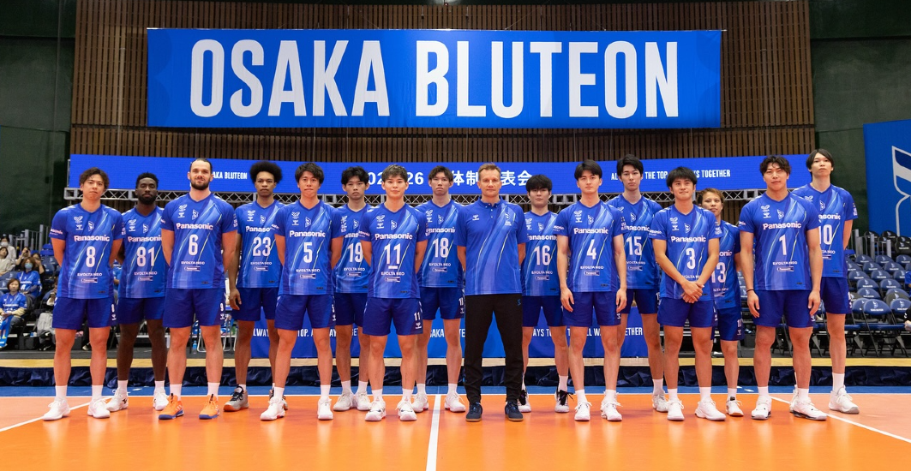
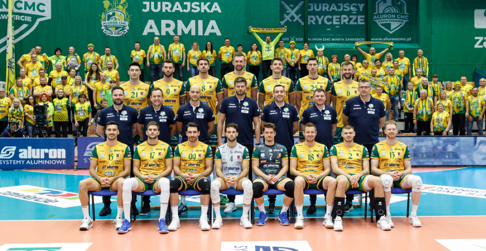

Siatkówka
Siatkówka
Moje ulubione kluby

Osaka Blueteon
Japoński zespół słynący z szybkości i precyzyjnej techniki. Zespół kładzie nacisk na trening młodzieży i systematyczny rozwój taktyczny.
- Rok założenia: 1968
- Stadion: Osaka Arena
- Największe sukcesy: mistrzostwo ligi krajowej 3 razy, puchar Azji
- Znani zawodnicy: Yuji Nishida , Antonie Brizzard

Sir Safety Perugia
Włoski klub z bogatą historią i silnym zapleczem zawodniczym. Regularnie walczy w europejskich pucharach i przyciąga gwiazdy światowej siatkówki.
- Rok założenia: 2001
- Stadion: PalaEvangelisti
- Największe sukcesy: mistrzostwo Włoch, wielokrotne zwycięstwa w krajowych pucharach
- Znani zawodnicy: Kamil Semeniuk, Simeon Giannelli

Warta Zawiercie
Polski klub z mocną pozycją w PlusLidze. Znany z zaangażowania lokalnej społeczności i stabilnej pracy z młodzieżą.
- Rok założenia: 1971
- Stadion: Hala OSiR Zawiercie
- Największe sukcesy: stały udział w PlusLidze, dobre miejsca w tabeli krajowej
- Znani zawodnicy: Mateusz Bieniek , Bartłomiej Bołądź